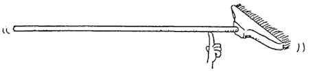

class: inverse, middle, center # Expectation --- .left-column[ ## Preliminaries ] .right-column[ # Summation In many situations we'll find ourselves summing things indexed by subscripts. <font size=3> E.g. *The Binomial(n, p) r.v. is the sum of $n$ Bernoulli(p) r.v.'s*</font> $$Z = X_1 + \cdots + X_n$$ In such cases, it's easier to introduce **summation** notation: $$Z = \sum_i^n X_i \qquad \text{\sum_i^n in } \LaTeX$$ By the way, for the **product** of things, we write $$Z = \prod_i^n X_i \qquad \text{\prod_i^n in } \LaTeX$$ ] --- .left-column[ ## Preliminaries ] .right-column[ # Arithmetic Mean How would you summarize a list of real numbers $a_1, \cdots, a_n$? <br> The most straightforward way would be to use their **arithmetic mean** $$\bar{a} = \sum_i^n \frac{1}{n} a_i$$ <br><br> AKA the *average* ] --- .left-column[ ## Preliminaries ] .right-column[ ## Weighted Mean More generally, we can use a sequence of *weights* $w_1, \cdots, w_n$ that add up to one and compute a **weighted mean**. $$\sum_i^n w_i x_i$$ <br><br> AKA the *weighted average* ] --- .left-column[ ## Preliminaries ## Definition ] .right-column[ ## Expected value The <b>expected value</b>, or the <b>expectation</b> of an r.v. $X$ is a special kind of weighted average of outcomes of $X$, where the weights by are their respective probabilities. <br> Ex. $X \sim DiscreteUniform(1, 6)$ or Die Roll $$E[X] = \frac{1}{6}1 + \cdots + \frac{1}{6}6 = 3.5$$ ] --- .left-column[ ## Preliminaries ## Definition ] .right-column[ ## Expected value The <b>expected value</b>, or the <b>expectation</b> of an r.v. $X$ is the average of the possible values that $X$ can take weighted by their probability <br> Ex. $X \sim Bernoulli(\frac{1}{2})$ (e.g., a fair coin toss) $$E[X] = 0\cdot \frac{1}{2} + 1\cdot \frac{1}{2} = \frac{1}{2}$$ ] --- .left-column[ ## Preliminaries ## Definition ] .right-column[ ## Expected value The <b>expected value</b>, or the <b>expectation</b> of an r.v. $X$ is the average of the possible values that $X$ can take weighted by their probability <br> Ex. $X \sim Bernoulli(\frac{1}{3})$ (e.g., a biased coin toss) $$E[X] = 0\cdot \frac{2}{3} + 1\cdot \frac{1}{3} = \frac{1}{3}$$ ] --- .left-column[ ## Preliminaries ## Definition ] .right-column[ ## Expected value The <b>expected value</b>, or the <b>expectation</b> of an r.v. $X$ is the average of the possible values that $X$ can take weighted by their probability <br> Ex. $X \sim Bernoulli(p)$ $$E[X] = 0\cdot (1-p) + 1\cdot p = p$$ ] --- .left-column[ ## Preliminaries ## Definition ] .right-column[ ## $E[X]$ as center of mass In Physics, the center of mass of an object is unique the point where the relative masses balance out.  ] -- .right-column[ The expectation can be thought as the "center of mass" of the PMF. .center[<img src="seesaw.png" height = 150>] ] --- .left-column[ ## Preliminaries ## Definition ## Properties ] .right-column[ # Expectation vs. PMFs Suppose that $X_1$ and $X_2$ are distributed according to the same distribution (e.g., they're two coins being tossed, or two dice being rolled) <br><br> Is it the case that $E[X_1] = E[X_2]$? <br><br><br><br> Suppose that $Y_1$ and $Y_2$ are such that $E[Y_1] = E[Y_2]$. That's all we know about them. <br><br> Is it the case that the pmfs of $Y_1$ and $Y_2$ must agree? <br><br> ] --- .left-column[ ## Preliminaries ## Definition ## Properties ] .right-column[ ## Do you get the same result? You are given two sequence of numbers: .center[$a_1, \cdots, a_n \ $ and $ \ b_1, \cdots, b_n$.] #### Procedure one: Take the average of $a_i$'s, then take the average of $b_i$'s, then sum the two. #### Procedure two: Sum each $a_i$ to each $b_i$ first, then take the average of the sum. ] --- .left-column[ ## Preliminaries ## Definition ## Properties ] .right-column[ ## Do you get the same result? You are given a sequence of numbers: .center[$a_1, \cdots, a_n$] And another number $c$. #### Procedure one: Average the numbers, then multiply them by $c$ #### Procedure two: Multiply the numbers by $c$ first, then average them. ] --- .left-column[ ## Preliminaries ## Definition ## Properties ## Linearity ] .right-column[ ## Linearity Expectation satisfies these two properties: <font size=2> Expectation of sum equals sum of expectations</font> $$E[X + Y] = E[X] + E[Y]$$ <br> <font size=2>Constants pop out</font> $$E[cX] = cE[X]$$ <br> .center[Together, these properties are called **linearity**. <br><br>Try veryfying them for the dice roll case.] ] --- .left-column[ ## Preliminaries ## Definition ## Properties ## Linearity ] .right-column[ ## Linearity Linearity makes it super easy to compute the expectation of combinations of random variables. Example: What is the expectation of the sum of two Bernoulli random variables? $$E[X_1 + X_2] = E[X_1] + E[X_2] = p + p = 2p$$ <br> Example: What is the expectation of the sum of 1000 dice rolls? $$X\_1, \cdots, X\_\{1000\} \sim DiscreteUniform(1,6), \qquad Z = \sum_i X_i$$ $$E[Z] = E[\sum_i X_i] = \sum_i E[X_i] = 1000E[X_i] = 3500$$ ] --- .left-column[ ## Preliminaries ## Definition ## Properties ## Linearity ] .right-column[ ## Linearity Linearity makes it super easy to compute the expectation of combinations of random variables. Example: What is the expectation of the sum of two Bernoulli random variables? $$E[X_1 + X_2] = E[X_1] + E[X_2] = p + p = 2p$$ <br> Example: What is the expectation of the sum of 1000 dice rolls? $$X\_1, \cdots, X\_\{1000\} \sim DiscreteUniform(1,6), \qquad Z = \sum_i X_i$$ $$E[Z] = E[\sum_i X_i] = \sum_i E[X_i] = 1000E[X_i] = 3500$$ ] --- .left-column[ ## Preliminaries ## Definition ## Properties ## Linearity ## Operator ] .right-column[ # Expectation as an Operator In mathematics, an <b>operator</b> is something that eats <i>functions</i> and outputs a number. (Just like functions eat numbers and output numbers). ] -- .right-column[ $E$ is called the <b>expectation operator</b> because eats random variables (functions!) and spits out a number summarizing that random variable (i.e., the mean). Example: $X_1$, $X_2$ rvs with $E[X_1] = \mu_1$ and $E[X_2] = \mu_2$. What is $E[a + bX_1 + cX_2]$? ] --- .left-column[ ## Preliminaries ## Definition ## Properties ## Linearity ## Operator ] .right-column[ # Expectation as an Operator Suppose we want to compute... <br><br> <font size = 7> .center[$E[5 + 10X_1 + 7X_2]$] </font> <br> And we know that $E[X_1] = 6$ and $E[X_2] = 2$ (say). ] --- .left-column[ ## Preliminaries ## Definition ## Properties ## Linearity ## Operator ] .right-column[ # Expectation as an Operator Think $E = $<img src="pacman.svg" height= 50>! <br><br> <font size = 7> .center[$E[5 + 10X_1 + 7X_2]$] </font> ] --- .left-column[ ## Preliminaries ## Definition ## Properties ## Linearity ## Operator ] .right-column[ # Expectation as an Operator <br><br><br> <font size = 7> .center[<img src="pacman.svg" height= 80>$5 + 10X_1 + 7X_2$] </font> ] --- .left-column[ ## Preliminaries ## Definition ## Properties ## Linearity ## Operator ] .right-column[ # Expectation as an Operator <br><br><br> <font size = 7> .center[$5$ <img src="pacman.svg" height= 80> $+ 10X_1 + 7X_2$ </font> <br><br> (You can think of this as $E[5] = 5\times 1 = 5$)] ] --- .left-column[ ## Preliminaries ## Definition ## Properties ## Linearity ## Operator ] .right-column[ # Expectation as an Operator <br><br><br> <font size = 7> .center[$5 + $ <img src="pacman.svg" height= 80>$ 10X_1 + 7X_2$ </font> <br><br> ($E$ skips "$+$" and "$-$", by linearity) ] ] --- .left-column[ ## Preliminaries ## Definition ## Properties ## Linearity ## Operator ] .right-column[ # Expectation as an Operator <br><br><br> <font size = 7> .center[$5 + 10$ <img src="pacman.svg" height= 80>$X_1 + 7X_2$ </font> <br><br> ($E$ skips constants, by linearity) ] ] --- .left-column[ ## Preliminaries ## Definition ## Properties ## Linearity ## Operator ] .right-column[ # Expectation as an Operator <br><br><br> <font size = 7> .center[$5 + 10 \cdot 6 $<img src="pacman.svg" height= 80>$ + 7X_2$ </font> <br><br> (Replacing random $X_1$ by its average value) ] ] --- .left-column[ ## Preliminaries ## Definition ## Properties ## Linearity ## Operator ] .right-column[ # Expectation as an Operator <br><br><br> <font size = 7> .center[$5 + 10 \cdot 6 + $<img src="pacman.svg" height= 80>$7 X_2$ </font> <br><br> ($E$ skips "$+$" and "$-$", by linearity) ] ] --- .left-column[ ## Preliminaries ## Definition ## Properties ## Linearity ## Operator ] .right-column[ # Expectation as an Operator <br><br><br> <font size = 7> .center[$5 + 10 \cdot 6 + 7$<img src="pacman.svg" height= 80>$X_2$ </font> <br><br> ($E$ skips constants, by linearity) ] ] --- .left-column[ ## Preliminaries ## Definition ## Properties ## Linearity ## Operator ] .right-column[ # Expectation as an Operator <br><br><br> <font size = 7> .center[$5 + 10 \cdot 6 + 7\cdot 2$<img src="pacman.svg" height= 80> </font> <br><br> (Replacing random $X_2$ by its average value) ] ] --- .left-column[ ## Preliminaries ## Definition ## Properties ## Linearity ## Operator ] .right-column[ # Expectation as an Operator <br><br><br> <font size = 9> .center[79</font> <br><br> (Nothing random is left after $E$ passes through) ] ] --- .left-column[ ## Preliminaries ## Definition ## Properties ## Linearity ## Operator ## Empirical ] .right-column[ # Expectation as usual mean You might be thinking: .center[<i>What about the definition of mean I'm used to?</i>] ] -- .right-column[ Like: given some numbers $$2,2,4,5,5,5,7,10$$ I want say that mean of those numbers is $$\frac{2+2+4+5+5+5+7+10}{8} = 5$$ Is that right? Is that also an "expectation"? ] --- .left-column[ ## Preliminaries ## Definition ## Properties ## Linearity ## Operator ## Empirical ] .right-column[ # Expectation as usual mean Thankfully, 🎊 YES 🎉! We consider of our data as the realizations of a random variable. $$2,2,4,5,5,5,7,10$$ ] -- .right-column[ That is, we imagine there was an rv $X$ with PMF: $$ p_X(2) = \frac{2}{8} \qquad p_X(4) = \frac{1}{8} \qquad p_X(5) = \frac{3}{8} \qquad p_X(7) = \frac{1}{8} \qquad p_X(10) = \frac{1}{8}$$ ] -- .right-column[ The expectation of this random variable would be $$E[X] = \frac{2}{8}2 + \frac{1}{8}4 + \frac{3}{8}5 + \frac{1}{8}7 + \frac{1}{8}10$$ ] --- .left-column[ ## Preliminaries ## Definition ## Properties ## Linearity ## Operator ## Empirical ] .right-column[ # Expectation as usual mean Thankfully, 🎊 YES 🎉! We consider of our data as the realizations of a random variable. $$2,2,4,5,5,5,7,10$$ ] .right-column[ That is, we imagine there was an rv $X$ with PMF: $$ p_X(2) = \frac{2}{8} \qquad p_X(4) = \frac{1}{8} \qquad p_X(5) = \frac{3}{8} \qquad p_X(7) = \frac{1}{8} \qquad p_X(10) = \frac{1}{8}$$ ] .right-column[ The expectation of this random variable would be $$E[X] = \frac{2+2+4+5+5+5+7+10}{8} = 5$$ ] --- .left-column[ ## Preliminaries ## Definition ## Properties ## Linearity ## Operator ## Empirical ] .right-column[ # Expectation as usual mean These "probabilities from data" are called <b>empirical probabilities</b>, and the "expectation" using these probabilities is called <b>empirical expectation</b>. <br><br> In some textbooks you might see this expectation denoted as $\widehat{E}[X]$, where the hat means "empirical". <br><br> We'll have more to say about empirical quantities after the midterm. 😈 ] --- .left-column[ ## Preliminaries ## Definition ## Properties ## Linearity ## Operator ## Empirical ## Transforms ] .right-column[ # Transformed Random Variables For reasons you'll see soon, often we're interested in expectations of <i>transformed</i> random variables. For example, suppose that $X$ has this PMF: $$p_X(x) = \begin{cases} \frac{1}{4} \qquad if x = 2 \\\ \frac{1}{2} \qquad if x = 3 \\\ \frac{1}{4} \qquad if x = 6 \\\ 0 \qquad otherwise \end{cases}$$ ] -- .right-column[ If we wanted to know $E[X]$, all we'd have to do is... $$E[X] = \frac{1}{4}2 + \frac{1}{2}3 + \frac{1}{4}6 = 3.5$$ ] --- .left-column[ ## Preliminaries ## Definition ## Properties ## Linearity ## Operator ## Empirical ## Transforms ] .right-column[ # Transformed Random Variables For reasons you'll see soon, often we're interested in expectations of <i>transformed</i> random variables. For example, suppose that $X$ has this PMF: $$p_X(x) = \begin{cases} \frac{1}{4} \qquad if x = 2 \\\ \frac{1}{2} \qquad if x = 3 \\\ \frac{1}{4} \qquad if x = 6 \\\ 0 \qquad otherwise \end{cases}$$ ] .right-column[ But what if instead we knew $Z = X^2$ and we wanted $E[Z]$? ] --- .left-column[ ## Preliminaries ## Definition ## Properties ## Linearity ## Operator ## Empirical ## Transforms ] .right-column[ # Transformed Random Variables Two simple steps: 1. Figure out the PMF of $Z$ 2. Compute the expectation of $Z$ using this PMF ] -- .right-column[ For discrete rvs, the first step is easy: $$p_Z(z) = \begin{cases} \frac{1}{4} \qquad if z = 4 (=2^2) \\\ \frac{1}{2} \qquad if z = 9 (=3^2)\\\ \frac{1}{4} \qquad if z = 36 (=6^2)\\\ 0 \qquad otherwise \end{cases}$$ ] -- .right-column[ The second step is easy, too! $$E[X] = \frac{1}{4}4 + \frac{1}{2}9 + \frac{1}{4}36 = 14.5$$ ] --- class: middle, center, inverse # Quick Check --- ## Quick Check <b>What is the expectation of a random variable?</b> <b>Why can we think of the expectation $E$ as an 'operator'?</b> <b>What is linearity?</b> <b>What is an empirical expectation?</b> <b>Suppose a random variable $X$ has the following PMF: $$p_X(x) = \begin{cases} \frac{1}{3} \qquad if x = 5 \\\ \frac{2}{3} \qquad if x = 7 \\\ 0 \qquad otherwise \end{cases}$$ What is $E[X]$?</b> <b> If $Z = (X - 7)^2$, then what is $E[Z]$?</b> --- ## Quick Check <b>What is the expectation of a random variable?</b> <font size=2>It's the average of its outcomes, weighted by their probabilities.</font> <b>Why can we think of the expectation $E$ as an 'operator'?</b> <font size=2>Because it 'eats' random variables (which are functions) and outputs their average (which is just a number). In math jargon, things that eat functions and output numbers are called 'operators'.</font> <b>What is linearity?</b> <font size=2>It's a collection two properties: skipping multiplicative constants ($E[5X] = 5E[X]$) and skipping plus signs ($E[X + Y] = E[X] + E[Y]$).</font> --- ## Quick Check <b>What is an empirical expectation?</b> <font size=2>It's an expectation where the probabilities come from the relative frequencies of the numbers in the data. These relative frequencies are also called empirical probabilities.</font> <b>Suppose a random variable $X$ has the following PMF: $$p_X(x) = \begin{cases} \frac{1}{3} \qquad if x = 5 \\\ \frac{2}{3} \qquad if x = 7 \\\ 0 \qquad otherwise \end{cases}$$ What is $E[X]$? <font size=2> $$E[X] = \frac{1}{3}5 + \frac{2}{3}7 \approx 6.33$$</font> <b> If $Z = (X - 7)^2$, then what is $E[Z]$?</b> <font size=2> $$E[Z] = \frac{1}{3}(5-7)^2 + \frac{2}{3}(7-7)^2 \approx \frac{4}{3}$$</font>